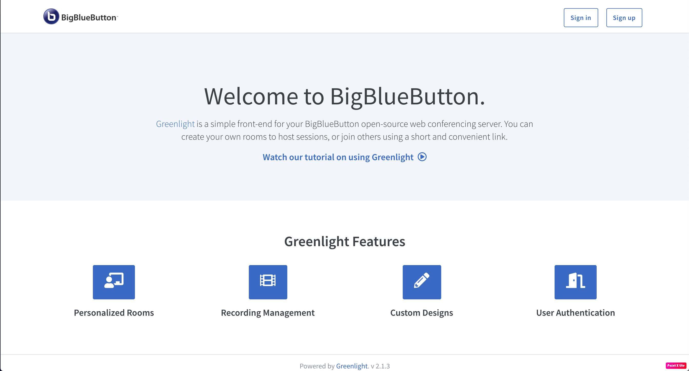

Wie kann ich meine eigenen digitalen Räume einrichten?
Lerne wie Du Deinen eigenen BigBlueButton Server zum Laufen bekommst.

Die erste Frage die Du beantworten musst ist: Auf welcher Server-Infrastruktur soll BigBlueButton laufen?
Setze Dich dafür am besten mit der IT-Abteilung deiner Institution in Verbindung. Es kann sein, dass deine Schule oder Universität die passende Infrastruktur schon hat oder zumindest schnell Zugriff darauf haben könnte.
Voraussetzungen für BigBlueButton
Die Mindestvoraussetzungen an einen BigBueButton Server auf dem Online Konferenzen flüssig laufen, sind:
- Ubuntu 16.04 64-bit OS mit Linux kernel 4.x
- 4 GB Arbeitsspeicher (RAM) mit aktiviertem Swap (8 GB Arbeitsspeicher sind besser)
- 4 CPU Kerne (8 sind besser)
Für lehreonline.org haben wir bei hetzner.com einen Server in Deutschland mit der folgenden Hardware angemietet:
- 32 GB Arbeitsspeicher
- 8 CPU Kerne (Intel Core i7-4770)
- 2,0 TB Festplatte (um Aufnahmen zu speichern)
Die Vorteile einer eigenen Infrastruktur liegen auf der Hand und wir beschreiben das hier auch noch ausführlicher.
Dieses Setup kostet uns ca. 35€ im Monat und sollte ausreichen um von mehreren parallelen Seminaren oder Schulklassen mit bis zu 30 Teilnehmer*innen, bis hin zur Vorlesung mit 150 Teilnehmern einen geeigneten Raum anbieten zu können. Unsere Infrastruktur ermöglicht außerdem die Aufzeichnung der Veranstaltungen.
Der Server braucht außerdem eine feste IP-Adresse, damit er einfach aus dem Internet erreichbar ist. Die folgenden Ports müssen erreichbar sein:
- TCP/IP Port 22 für SSH
- TCP/IP Port 80 für HTTP
- TCP/IP Port 443 für HTTPS
- UDP Ports 16384 bis 32768 für Medien Verbindungen
Bevor du mit der Installation loslegen kannst, solltest Du Dir auch noch überlegen unter welcher Adresse dein BigBlueButton Server im Internet erreichbar sein soll. Wir haben uns für bbb.lehreonline.org (bbb steht dabei für BigBlueButton) entschieden. Diese Adresse kannst du dann bei deinem Domain Name Provider direkt auf die IP Adresse des Servers leiten.
Installiere BigBlueButton und Greenlight.
Sobald du Zugang zu Deinem Server hast, kannst du BigBlueButton und Greenlight installieren. Die folgenden einfachen Schritte sind ausreichend um in kurzer Zeit ein voll funktionsfähiges System zu installieren. Falls Du dich für die ausführlichere Dokumentation interessierst, findest Du diese
hier. BigBlueButton ist die Software mit der die Online Räume laufen. Greenlight ist ein einfaches Interface zur Verwaltung der Nutzer und Räume.
Die Entwickler*innen Community von BigBlueButton hat die Installation außergewöhnlich einfach gemacht!
Führe den folgenden Befehl auf deinem Server aus:
wget -qO- https://ubuntu.bigbluebutton.org/bbb-install.sh | bash -s -- -v xenial-220 -s bbb.beispiel.org -e deine.adresse@ebeispiel.org -g
Bevor du diesen Befehl ausführst, musst Du nur Deine Adresse an die Stelle von bbb.beispiel.org setzen und deine Email Adresse an die Stelle von deine.adresse@ebeispiel.org. Mehr zum Installations Skript von BigBlueButton findest du hier.
Das Skript führt nun selbstständig alle notwendigen Schritte aus. Je nach Server kann dies zwischen 20 Minuten und einer Stunde dauern. Genug Zeit um dich mit den Funtkionen von BigBlueButton vertraut zu machen.
Richte Dir Deinen Administrations Zugang ein.
Damit Du Deinen Server einfach mit Greenlight verwalten kannst, solltest Du Dir einen Administrations Zugang einrichten. Dies geht ganz einfach indem Du den folgenden Befehl auf Deinem Server ausführst.
docker exec greenlight-v2 bundle exec rake user:create["Vorname Nachname","deine.adresse@ebeispiel.org","administrator","admin"]
Mit diesem Befehl erstellst Du einen neuen Nutzer in Greenlight. Dafür solltest du natürlich deinen Namen "Vorname Nachname" und deine Email Adresse "deine.adresse@ebeispiel.org" anpassen. Der dritte Eintrag "administrator" ist Dein Passwort für den Account. Dein Passwort kannst Du danach ganz einfach in Greenlight ändern. Der vierte Eintrag "admin" legt die Administrator Rolle fest. (Falls du einen einfachen Account anlegen möchtest, dann kannst du hier "user" eintragen.)
Starte Deinen Server.
Jetzt kannst Du Deinen Server neu starten. Nach dem Neustart bist Du fast bereit für Deinen ersten digitalen Raum.
Zunächst musst Du nur dein BigBlueButton System starten. Die folgenden Schritte solltest du nach jedem Neustart des Servers ausführen.
- Starte BigBlueButton neu.
bbb-conf --restart
Dieser Befehl startet das BigBlueButton Programm neu.
- Starte den ngnix Web-Server.
systemctl restart nginx
Damit wird der nginx Web-Server für die Greenlight Oberfläche neu gestartet.
- Navigiere zu Greenlight.
cd greenlight
Damit navigierst Du in den Ordner der Greenlight Oberfläche.
- Starte Greenlight.
docker-compose up -d
Dieser Befehl startet die Greenlight Oberfläche.
Jetzt kann es aber wirklich losgehen. Wenn Du in Deinem Browser die Adresse deines BigBlueButton Servers (z.b. bbb.lehreonline.org) aufrufst, solltest Du die folgende Seite sehen.

Hier kannst Du Dich mit Deinem erstellten Nutzer einloggen und es kann los gehen.
Lade Teilnehmer*innen zu Deinem ersten digitalen Raum ein.
Nach dem Login mit Deinem vorhin erstellten Administrator Zugang, kannst Du Deinen ersten digitalen Raum starten. Kopiere den Link zu Deinem Raum und schicke ihn an alle, die in Deinen ersten Online Raum kommen sollen. Dann kannst Du den Raum starten.
Die Möglichkeiten von BigBlueButton beschreiben wir hier.